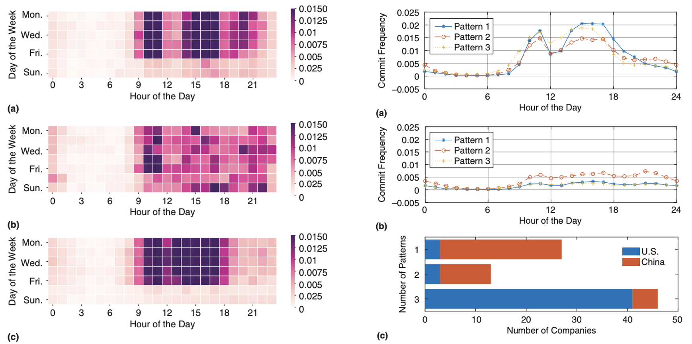
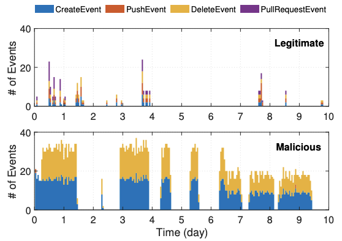

Jiayun Zhang
Ph.D. Student
Department of Computer Science and Engineering
University of California, San Diego
Email / GitHub / Google Scholar / CV
Ph.D. Student
Department of Computer Science and Engineering
University of California, San Diego
Email / GitHub / Google Scholar / CV

About Me
I am a third year Ph.D. student in the Department of Computer Science and Engineering at UC San Diego. I am co-advised by Prof. Rajesh K. Gupta and Prof. Jingbo Shang. My research lies in the intersection of the Internet of Things (IoT) and data mining, with a focus on designing data- and system-efficient data mining strategies for IoT applications. Before joining UCSD, I received my B.S. (with honors) in Computer Science from Fudan University, where I was advised by Prof. Yang Chen.
Publications
-
 Navigating Alignment for Non-identical Client Class Sets: A Label Name-Anchored Federated Learning Framework.
Navigating Alignment for Non-identical Client Class Sets: A Label Name-Anchored Federated Learning Framework.
Jiayun Zhang, Xiyuan Zhang, Xinyang Zhang, Dezhi Hong, Rajesh K. Gupta, Jingbo Shang.
ACM SIGKDD Conference on Knowledge Discovery and Data Mining (KDD), 2023.
-
 Minimally Supervised Contextual Inference from Human Mobility: An Iterative Collaborative Distillation Framework.
Minimally Supervised Contextual Inference from Human Mobility: An Iterative Collaborative Distillation Framework.
Jiayun Zhang, Xinyang Zhang, Dezhi Hong, Rajesh K. Gupta, and Jingbo Shang.
International Joint Conferences on Artificial Intelligence (IJCAI), 2023.
-
DEMOMOTIF: Demographic Inference from Sparse Records of Shopping Transactions based on Motif Patterns.
Jiayun Zhang, Xinyang Zhang, Dezhi Hong, Rajesh K. Gupta, and Jingbo Shang.
Workshop on Machine Learning on Graphs at ACM International Conference on Web Search and Data Mining (WSDM), 2023.
-
 Blacklight: Scalable Defense for Neural Networks against Query-Based Black-Box Attacks.
Blacklight: Scalable Defense for Neural Networks against Query-Based Black-Box Attacks.
Huiying Li, Shawn Shan, Emily Wenger, Jiayun Zhang, Haitao Zheng, Ben Y. Zhao.
USENIX Security Symposium, 2022.
-

Understanding the Working Time of Developers in IT Companies in China and the United States.
Jiayun Zhang, Yang Chen, Qingyuan Gong, Aaron Yi Ding, Yu Xiao, Xin Wang, Pan Hui.
IEEE Software, 2021, 38(2):96-106.
-
DeepPredict: A Zone Preference Prediction System for Online Lodging Platforms.
Yihan Ma, Hua Sun, Yang Chen, Jiayun Zhang, Yang Xu, Xin Wang, Pan Hui.
Journal of Social Computing, 2021, 2(1):52-70.
-
 Dataset: A video dataset of a wooden box assembly process.
Dataset: A video dataset of a wooden box assembly process.
Jiayun Zhang, Petr Byvshev, Yu Xiao.
Workshop on Data: Acquisition To Analysis at ACM Conference on Embedded Networked Sensor Systems (SenSys), 2020.
-
 Fawkes: Protecting Privacy against Unauthorized Deep Learning Models.
Fawkes: Protecting Privacy against Unauthorized Deep Learning Models.
Shawn Shan, Emily Wenger, Jiayun Zhang, Huiying Li, Haitao Zheng, Ben Y. Zhao.
USENIX Security Symposium, 2020.
-

Detecting Malicious Accounts in Online Developer Communities Using Deep Learning.
Qingyuan Gong, Jiayun Zhang, Yang Chen, Qi Li, Yu Xiao, Xin Wang, Pan Hui.
ACM International Conference on Information and Knowledge Management (CIKM), 2019.
-
Identifying Structural Hole Spanners in Online Social Networks Using Machine Learning.
Qingyuan Gong, Jiayun Zhang, Xin Wang, Yang Chen
ACM SIGCOMM Conference, Poster Session, 2019.
Experience
-

VMware, Inc. Shanghai, China
MTS (Member of Technical Staff) Intern. Apr – Oct 2018
Professional Services
- Program Committee Member / Reviewer: KDD (2023), UbiComp (2023), AAAI (2023), Computer Communications (2021-2022).
Selected Awards
- Outstanding Graduate of Fudan University 2020
- Chun-Tsung Scholar, Research Endowment Funded by Nobel Laureate Dr. Tsung-Dao Lee 2020
- The First Prize of Shanghai Open Data Innovation Research Competition (Top 1 among 65 teams) 2019
- Best Student Award, Mobile Systems and Networking Group in Fudan University (1 out of 32) 2019
- Xiyuan Scholar, Undergraduate Research Program in Fudan University 2018
- Scholarship for Outstanding Students, Fudan University 2016 & 2018 & 2019